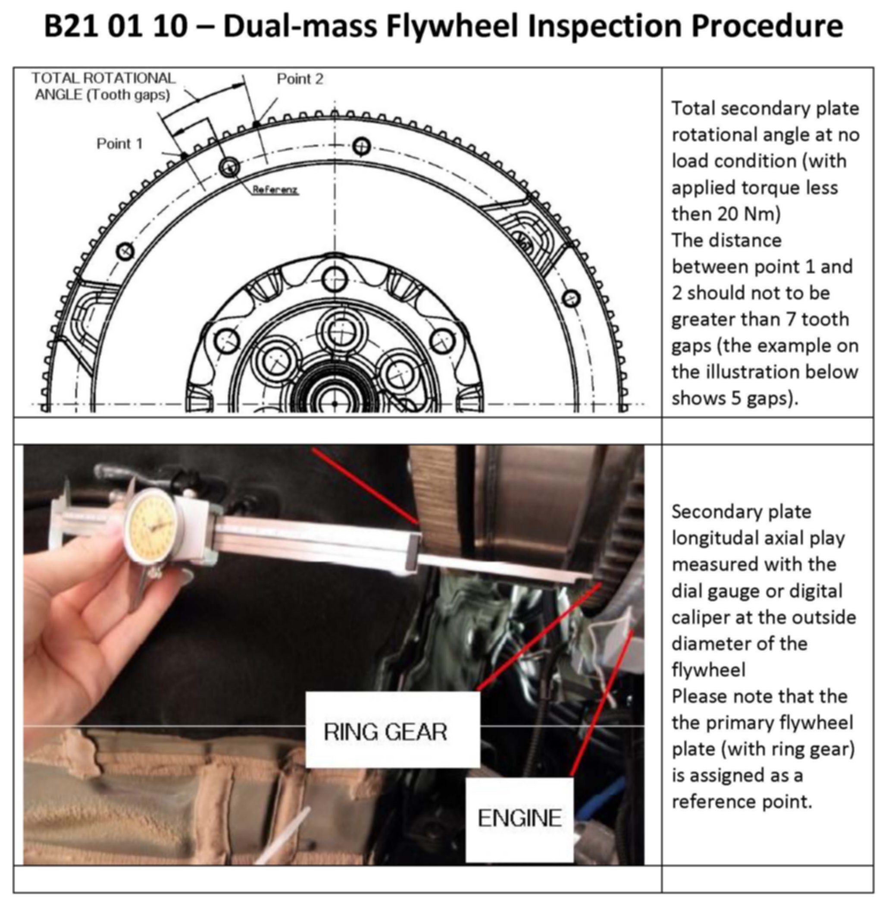
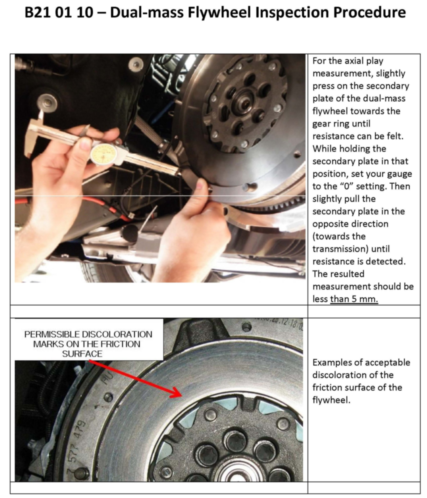
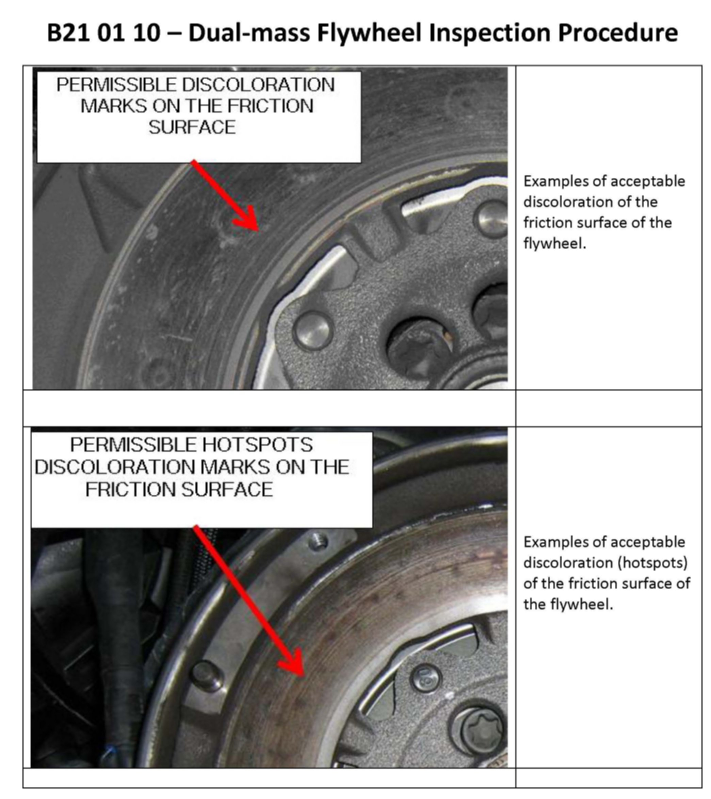
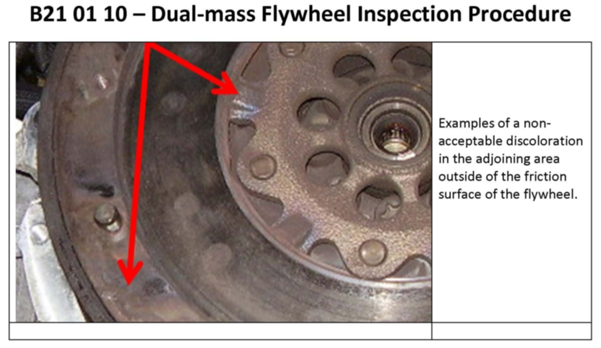

M/T - Dual Mass Flywheel Diagnostic Criteria
SI B21 01 10Clutch
November 2010
Technical Service
SUBJECT
Dual Mass Flywheel - Diagnosis and Inspection
MODEL
All models equipped with dual-mass flywheel, except Motorsport vehicles
INFORMATION
Prior to condemning the dual-mass flywheel as defective, the following three criteria have to be checked and evaluated:
1. Total rotational angle at no load condition (with applied torque less then 20 Nm)
2. Secondary plate longitudal axial play
3. Friction surface appearance changes due to thermal overload.
PROCEDURE
Refer to the attached "Dual-mass Flywheel Inspection" document for the complete inspection procedure.
The dual-mass flywheel replacement is justified only if one or more of the following criteria are met:
1. The total rotational free-play, measured at the flywheel gear ring, is equal or greater than 7 tooth gaps.
2. The secondary plate total axial bearing play, measured at outside diameter of the flywheel, is equal or greater than 5 mm.
3. A significant discoloration in the adjoining area outside the friction ring, or a severe ablation/erosion of the friction area, is present.
WARRANTY INFORMATION
For information only
Warranty claims may be denied:
^ If the diagnostic procedure outlined above is not followed when replacing a dual-mass flywheel.
ATTACHMENTS




B210110_Dual_Mass_Flywheel_Inspection